Simulation-混合网格1
很多时候我们的模型会存在不同的薄厚实体，此时就会需要我们用“实体单元”和“壳单元”进行划分网格。我们会采用【Simulation混合网格划分功能】来创建不同的单元类型，以保证混合网格的兼容性。
不兼容网格会使实体单元和壳单元完全分离，全局接合在壳单元和实体单元接触面是不起作用。为了连接两者，必须恰当地定义沿着接触面边界上的局部接触条件。
混合网格划分支持：静态、频率、扭曲、热力、线性和非线性算例。
实例分析
材料：低碳合金钢SA515
夹具：容器垂直向下并用4个定向接头支撑着，容器允许在直径方向自由膨胀。
载荷：容器在温度为700°F的最大工作压力为165psi，在本章除压力外不考虑其他载荷。
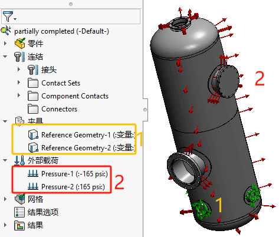新建算例
分析装配体：
容器主体+顶端底端：主体由 0.5in厚的钢制造而成，由于与外直径 56in相当薄，所以用壳单元建模最合适。
蒸汽入口+入孔管：是用薄壁厚度的钢管制成，因此全部接管及加强件用壳单元来建模。
管口法兰和入孔盖：管口法兰不是很薄，同时可能承受很大的弯曲扭矩。 入孔盖的厚度相同较厚，并且用螺栓 连接在法兰上，因此用实体网格来研究。
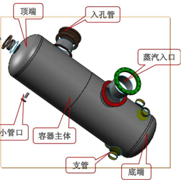壳体定义
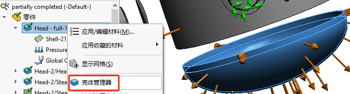 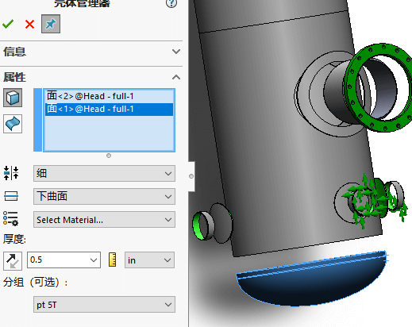连结
局部接触条件：有间隙的实体之间必须用局部【接合】的相触面组来确保连接。
1、壳体面于壳体面接合
面面接合接触的两个壳单元始终是不兼容的，须定义局部【接合】。有个例外，是两壳体共享分割线的区域，此处接合是有效的。
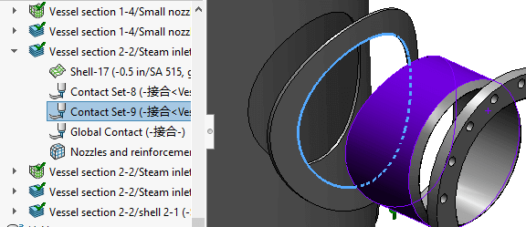2、壳体边于壳体面接合
只要在源壳体边与目标壳体面上的分割线一致，全局兼接合约束保接融面上的节点合并在一起。当这个位置是不规范的，也就是在目标面上没有分割线存在或在源边和目标面之间存在间瞭时，必须用局部【接合】接触进行定义。
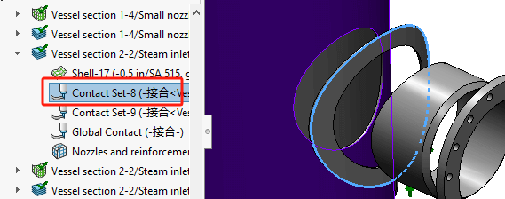3、壳体与实体接合
模型中存在的主要接触发生在壳体和实体之间。按照惯例，此时需要设置局部【接合】的接触。同时,【组1】必须是壳体的面或边,【组2】必须是实体零部件上的面。
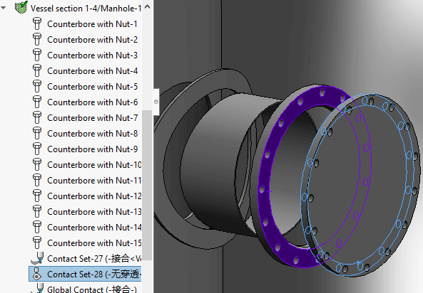夹具
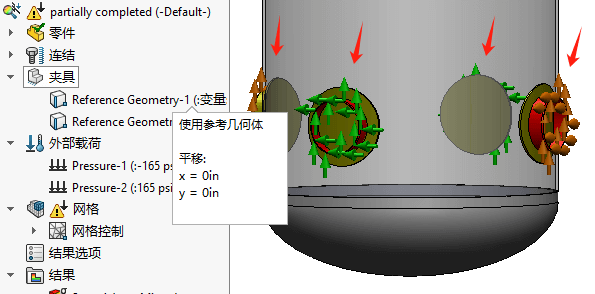 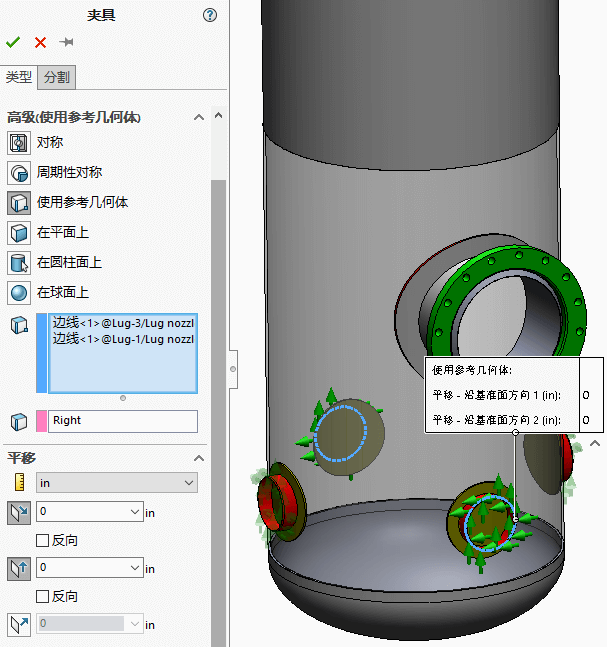 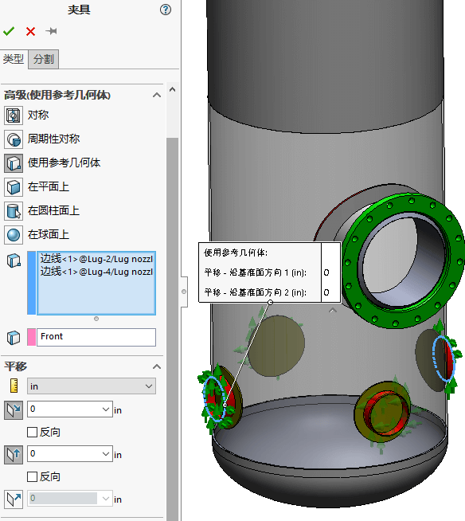载荷
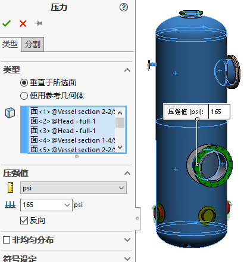 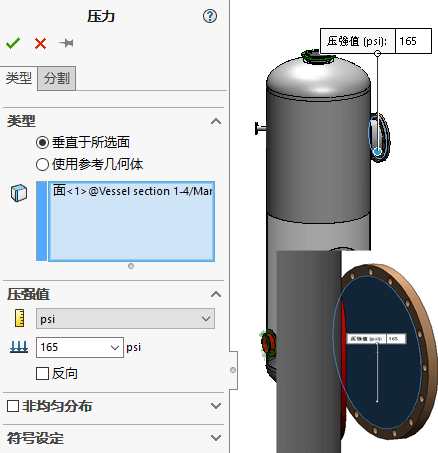网格
按默认网格划分时会出现如下失败提示：可以按照提示，选择【网格失败诊断】，或是在仿真树右键【网格-失败诊断】

在提示处我们会发现是其中一零件的结构尺寸问题，对于这里，我们可以用前面学过的【网格-应用局部网格控制】的方式，调小如图选择面的最小网格尺寸。
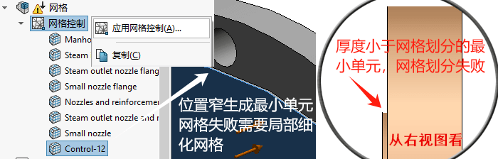 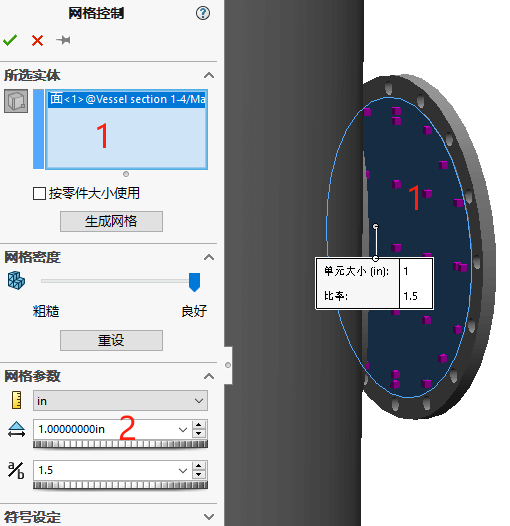运行
应力
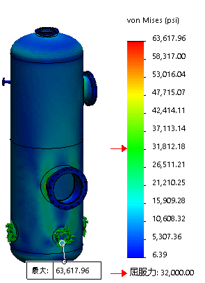位移
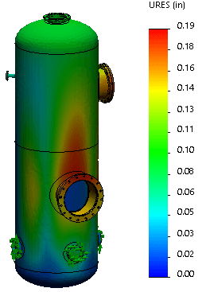总结
– 壳和壳、壳和实体不兼容网格的波节沿着结合接触面不会合并在一起，而是会产生间隙，定义局部的结合接触是必要的。
– 壳与实体结合时通常选择壳的面或边线作为【组1】，实体的面作为【组2】
– 在模型中非常小的特征，或相当复杂特征都可能导致网格划分问题。需应用适当的网格控制是必须的